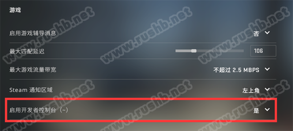
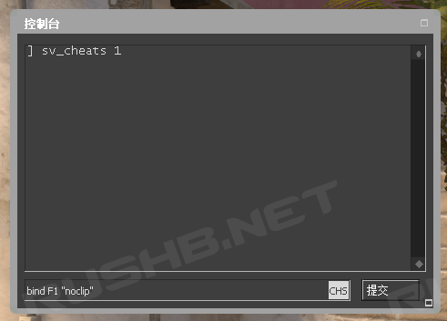
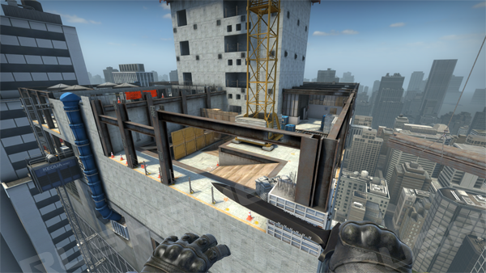

CSGO RushB中文网
CSGO RushB中文网
本文将介绍大家如何使用CSGO控制台指令（命令）参数：noclip，以及解决部分玩家在使用noclip指令时卡住不动的问题。
控制台飞天穿墙指令noclip，能够让玩家在地图上能够无视建筑、障碍飞行移动（限单机模式或自建服务器），适合用来跑图。
如何使用noclip：
首先需要打开控制台功能，进入游戏——“设置”——“游戏设置”——“游戏”——“启用开发者控制台（~）”，选择“是”，之后按“~”键（ESC下面）打开控制台功能。

进入地图后，按“~”打开控制台控制台，输入以下指令进入Cheat模式：
sv_cheats 1
为了方便实用飞天指令，本站建议绑定按键，在控制台输入以下指令：
bind F1 "noclip"
这样，当按F1时，就打开飞天功能，再按F1则关闭，你也可以将F1换成其他按键。

注意，玩家在高空时关闭飞天功能的话可能会直接摔下来扣血，所以建议打开无敌模式模式，控制台输入以下指令：
god
如此这般，玩家就可以在地图上无忧无虑穿梭。

使用noclip飞天命令却卡住不动解决办法：
其实noclip飞天命令有另外两个控制台指令控制，分别是sv_noclipspeed和sv_noclipaccelerate，这两个指令都可能导致玩家启用飞天功能后却无法移动。
sv_noclipspeed是决定飞天时的移动速度倍数，默认值为5；而当为0时，飞天速度为0，也就导致了玩家0速度无法移动，输入以下指令可解决（数值最大为8）：
sv_noclipspeed 5
sv_noclipaccelerate是决定飞天时的移动加速度倍速，默认值为5；而当为1时，也会导致玩家卡住不动，输入以下指令可解决：
sv_noclipaccelerate 5
如果上述两个飞天速度控制命令设置后还是无法移动，那么可能是控制台命令sv_maxspeed导致，当sv_maxspeed设为0时，人物移动速度也为0，输入以下指令可解决（数值可更高）：
sv_maxspeed 320
同理，设置上述的控制台命令，玩家能够调整飞天移动速度，更快的探索地图。